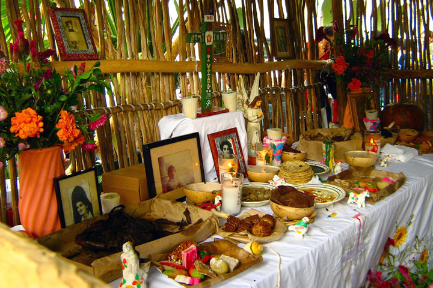

En Yucatán, este día se celebra de una forma muy particular, pues se cree que las almas de los difuntos regresan a casa para convivir con sus seres queridos. La comida juega un papel importante en esta celebración, siendo el pan de muerto y la jícama con miel algunos de los platillos más representativos.
Hanal Pixán es una tradición yucateca, similar al Día de Muertos en México, celebrada en muchos pueblos y ciudades de origen o con influencia maya en los estados mexicanos que conforman la península de Yucatán.

Xtabentún:
Se trata de un licor dulce, elaborado a base de miel de abejas y anís, que se ha convertido en una bebida tradicional de Yucatán.
El Xtabentún es un licor ancestral de origen maya que se produce en el estado de Yucatán, México. Este delicioso licor tiene una historia rica y significativa que se entrelaza con una leyenda maya.
Elaboración del Xtabentún El Xtabentún se elabora a partir de: Miel de abejas meliponas: Producida por las abejas a partir de la planta llamada Xtabentún. Anís: Que le da su sabor anisado. Destilación artesanal con ron de caña. Este licor no solo es aclamado por los turistas, sino que también tiene un significado profundo para los habitantes de Yucatán. Además de su sabor, el Xtabentún evoca la leyenda de Xtabay y su bondad oculta tras los rumores.
Industria henequenera en Yucatán
La industria henequenera es una agroindustria que parte del cultivo del henequén o sisal, planta autóctona de Yucatán, México, conocida por los mayas como ki, cuya fibra, de características tales que favorecen su hilado y su tratamiento textil.
Esta planta fue la base de la economía del estado durante muchos años y aún hoy en día es posible visitar las haciendas henequeneras, donde se puede conocer más acerca de esta tradición.
Vaquería:
Es una fiesta popular, que se celebra en honor a la Virgen de la Candelaria y que tiene lugar en los pueblos de la región. Se caracteriza por la música, el baile y los trajes típicos.
La vaquería, en La península de Yucatán, México, es una fiesta popular cuyo origen se remonta a la época colonial, cuando los españoles que habían conquistado la región y que se dedicaban a la crianza de ganado vacuno en sus haciendas, convocaban a sus trabajadores para "la hierra" de sus vacadas y ofrecían, o permitían, un festejo o baile colectivo a manera de ceremonia como preludio al herraje que implicaba un esfuerzo físico considerable.
Bailes típicos:
En Yucatán se pueden encontrar diversos bailes tradicionales, como la jarana y el zapateado, que se bailan en las fiestas populares y que forman parte de la cultura local.
8 Danzas típicas de Yucatán
Las Bombas:
El Baile de las Cintas:
La Cabeza de Cochino:
Las Mujeres que se Pintan:
La danza de Abraham e Isaac:
Kots Kaal Tso' (La danza de los Pavos):
Las suertes:
“El Torito” (Son de Jaleo):
El Folklore y Leyendas
La cultura yucateca está impregnada de folklore y leyendas que han sido transmitidas de generación en generación. Escucha las historias de la Xtabay, una enigmática figura femenina, o descubre los secretos detrás del famoso Alux, un ser mítico que habita en las selvas.
La X´tabay:
relato que aún suscita temor, vinculado a una mujer que se manifiesta en forma de mariposa y seduce a los hombres.
Los Aluxes:
Estos seres extraños que se aparecen por las noches en los campos y montes de la península de Yucatán son parte de la cosmovisión ancestral de la región y han sido transmitidos a lo largo de generaciones
El Enano de Uxmal:
leyenda que narra la historia de una mujer hechicera y un huevo mágico en la ciudad de Kabah durante el imperio de Uxmal.
El Huay Chivo:
Narra la historia de un hechicero con la habilidad de transformarse en una bestia mitad chivo, mitad hombre, después de vender su alma al Kisín. Esta leyenda refleja creencias antiguas arraigadas en la cultura maya
Las vestimentas típicas
Los yucatecos sienten mucho orgullo por su herencia cultural y una de las demostraciones más fieles y coloridas es a través de los atuendos regionales.
La vestimenta ha sufrido modificaciones y adiciones a través del tiempo pero mantiene una base milenaria como herencia de la cultura maya en conjunción con detalles españoles y caribeños.
Es el vestido tradicional, utilizado en fiestas de vaquería y bodas, con el “hipil”, el “fustán” y el “jubón” como elementos principales. Es normal que el hipil también se use diariamente como accesorio decorativo. Entre los hombres, la “guayabera” es la pieza distintiva junto con un sombrero de paja.
Festividades indígenas
Templo de Kukulcán en el sitio arqueológico de Chichén Itzá
Yucatán es un popular destino turístico por su herencia maya, con decenas de sitios históricos con distintos significados y relevancia cultural.
Cada lugar tiene su propia agenda de eventos con sus enfoques y particularidades.
El festival de Equinoccio de la Primavera se lleva a cabo del 19 al 21 de marzo de cada año en la pirámide de Kukulcán y el festival del Equinoccio de Otoño es del 20 al 22 de septiembre, ambos en Chichén Itzá. Izamal y Uzmal son otros sitios que albergan eventos culturales regularmente.